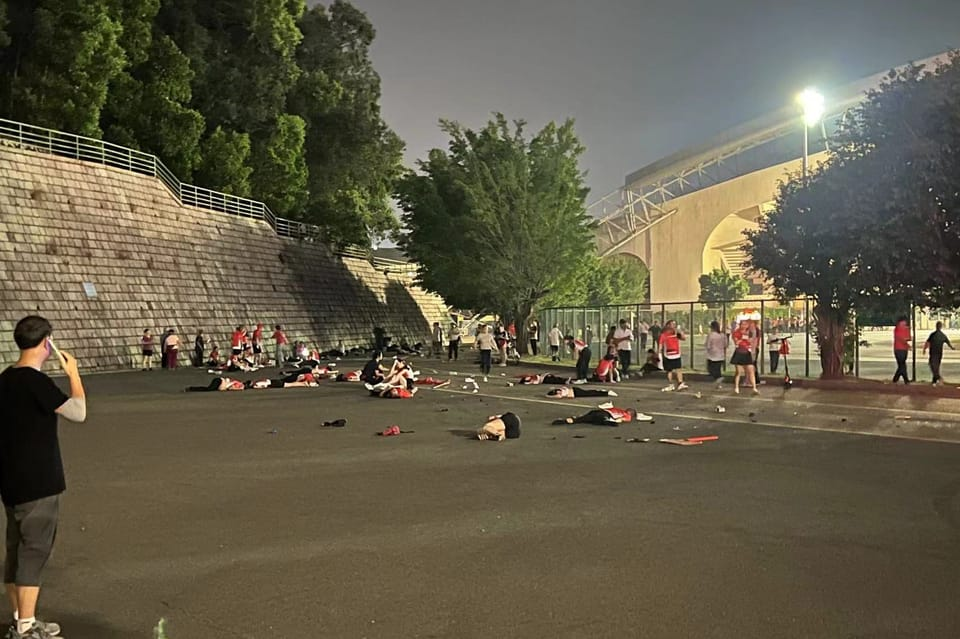

世界苦茶04月19日新闻 | 37条 | 中联办要求香港“对美斗争”

中联办要求香港“对美斗争” | 特朗普称可能退出俄乌战争调解 | 黄仁勋与DeepSeek创始人会面 | 台湾限制立委和团体前往中国 | 民营经济促进法将在四月底三读
苦茶数据
美元兑人民币：7.30（昨日7.30，前日7.30）
美元兑日元：142.38（昨日142.57，前日142.30）
上证指数：休市（昨日3276，前日3266）
标普500指数：休市（昨日5282，前日5275）
比特币：84989（昨日84600，前日83958）
布伦特原油：67.96（昨日66.38，前日64.12）
中国新闻
• 特朗普称中美对话良好 ：美国总统特朗普说，美国正与中国私下进行“良好对话”。路透社报道，特朗普星期五在白宫对媒体讲话时突然说：“顺便告诉你们，我们和中国正在进行良好对话。非常好的对话。”特朗普没有提供更多细节。
• 王毅谈万隆精神与霸凌 ：中共政治局委员、中国外交部长王毅，星期四向弘扬万隆精神圆桌会发表书面致辞，指强权政治、单边霸凌仍在破坏国际规则，呼吁全球南方国家共同维护多边贸易体制。中国外交部官网星期五发布王毅的书面致辞，首先提及1955年举行的印度尼西亚万隆会议，称亚非29个国家和地区领导人70年前齐聚印尼万隆举行会议，形成了“团结、友谊、合作的万隆精神”。王毅称，70年后的今天，强权政治、单边霸凌仍在破坏国际规则，制造分裂对立，世界再次走到关键十字路口。
• 民促法草案将提交审议 ：中国全国人大常委会将在4月27日至30日于北京召开会议，审议民营经济促进法草案。据新华社报道，星期五举行的全国人大常委会委员长会议建议，全国人大常委会会议审议民营经济促进法草案、传染病防治法修订草案、原子能法草案、仲裁法修订草案；审议委员长会议关于提请审议生态环境法典草案的议案。
• 中国暂停接收波音客机 ：路透社引述航班追踪数据报道称，一架上月抵达浙江舟山波音交付工厂的飞机，星期五似乎正返回美国西雅图，表明至少有一家中国航空公司可能因美国关税而暂停接收波音客机。彭博社星期二引述消息人士报道，中国政府要求国内航空公司暂停接收美国波音的客机，并停止从美国公司购买飞机零部件和设备，作为对美国总统特朗普关税行动的报复。航班追踪数据显示，在特朗普宣布加征关税的前几周，波音似乎仍在为正常业务做准备，至少四架新的737 MAX飞机停放在舟山的完工与交付中心。波音在那里为飞机安装内饰并喷涂涂装，然后交付给中国客户。
• 武汉航母测试台疑升级 ：美国媒体引述卫星图像透露，位于中国武汉的全尺寸陆基航母测试设施正进行大规模改建，改建后的模拟甲板布局与美国海军福特级航母相似，很可能是为中国下一代航母的开发做准备。美国“战区”新闻网星期四报道，商业卫星遥感公司星球实验室4月6日在武汉上空拍摄的照片显示，与2019年相比，该模拟飞行甲板整体宽度显著增加，甲板一侧的边缘几乎延伸至相邻道路；疑似是舰岛的上层建筑也从原有位置大幅移动至模拟甲板右舷艉部，与美国福特级航母布局类似。卫星图像显示，这一航母模拟甲板位于一座建筑的顶部，主要作用是评估各种舰载机设计在海上的潜在用途，包括在航母甲板上的布置和调度。
• 中联办称香港须对美斗争 ：中国国务院港澳事务办公室主任夏宝龙发表强硬批美演讲后，香港中联办主任郑雁雄在专题学习会议上18次提及“斗争”，称中美战略博弈加剧，夏宝龙讲话“增添香港社会对美斗争战斗力，明确香港斗争的职责任务”。中国国务院港澳事务办公室主任夏宝龙星期二在香港“全民国家安全教育日”开幕典礼上说，美国一而再、再而三对香港进行遏制打压，只能换来其在香港的代理人的加速灭亡，最终必将反噬其自身，“让美国那些乡巴佬们在中华民族五千年文明面前，去哀鸣吧！”中联办星期四召开专题会议学习夏宝龙讲话。 （翻评：香港之前是一个以商业、专业化为主要气质的地区，现在成为了“对美斗争”的桥头堡。）
• 全球首个人形机器人半程马拉松北京开跑： 4月19日7点30分，20支人形机器人赛队与人类跑者共同站在北京亦庄全程21.0975公里的赛道上。随着一声枪响，全球首场“人机共跑”半程马拉松赛事正式开跑，让全世界为之瞩目和惊叹。据介绍，本次比赛采用人机共跑赛道的模式，人类选手赛道与机器人赛道共用，但分属不同赛区，这种模式对机器人而言，在环境适应、地面应对以及通信等方面都带来了前所未有的挑战，这在全球范围内也是首次。马拉松赛场上，人类跑者与“钢铁跑者”们从南海子公园一期南门出发，途经泡桐大道、文博大桥、通明湖公园等网红打卡地，最终到达通明湖信息城。
亚太印太新闻
• 台启用赴陆团体登录系统 ：台湾内政部启用宗教等团体赴中国大陆登录系统，内政部长刘世芳称，希望以公开信息方式保障他们的行踪安全。综合《中国时报》《自由时报》报道，台湾内政部星期四启用“宗教等团体赴中国交流资讯公开专区”，适用团体包括宗教团体、社会团体与人民团体，他们在前往中国大陆前可填写名称、赴陆日期、地点和目的事由等，并公开揭露。内政部长刘世芳星期五表示，赴陆登录资讯区以鼓励为原则，希望宗教、社会和人民团体可以自由登记或登录，让台湾人能知道他们到中国大陆的地点、起迄时间等，如此台湾更能够保障他们的行踪安全。
• 美议员访台支持台防卫 ：一名正在访台的美国参议员周五在与台湾总统赖清德会晤时表示，美国将持续协助台湾进行自我防卫，并希望看到台海和平，不受胁迫或武力威胁。据路透社报道，正在访台的美国联邦参议院外交委员会亚太小组主席、共和党参议员瑞克兹星期五在台湾总统府与赖清德会晤时表示，尽管美国政府会更替，但国会对台湾不分党派的支持始终如一。瑞克兹说：“美国致力于印太地区的和平与稳定。我们希望看到台海和平，反对任何单方面改变台湾现状的行为。”
• 台检方声押黄吕锦茹等人 ：台湾检察单位侦办罢免连署书涉造假案，约谈国民党台北市党部主委黄吕锦茹等四人后，星期五清晨针对这四人向法院声请羁押禁见。综合《联合报》《自由时报》和壹苹新闻网报道，台北地方检察署星期四指挥调查局台北市调处检调前往国民党台北市党部搜索，并约谈黄吕锦茹、台北市党部书记长初文卿、总干事姚富文，以及第一区党部执行长曾繁川。检察官漏夜侦讯后认为，四人有串灭证之虞，依伪造文书、违反个资法等罪，向法院声押禁见。
• 国民党静坐遭警方调查 ：台湾在野的国民党党公职人员和支持者到台北地检署外集结抗议，但没有事先申请批准，台北市警方证实将通知国民党主席朱立伦等三人到案，依法惩办。综合台湾《联合报》《中国时报》报道，为了抗议台北地检署以涉嫌伪造文书案约谈国民党台北市党部主委黄吕锦茹等四人，朱立伦下达动员令，召集党公职人员和支持者星期四晚齐聚北检外静坐抗议。北检属于集会游行禁制区，依法不得举行集会游行活动，台北市当晚动员160名警力在现场维持秩序。
• 赖清德称不牺牲农渔业 ：台湾总统赖清德在与农渔业者座谈时表明，不会为了与美国的关税谈判牺牲农渔业。据台湾总统府官网消息，赖清德星期五上午到嘉义与养殖产业业者座谈，针对政府因应美国关税政策提出相关对策，听取业者的意见，希望让政策对农渔业更有保障。赖清德在致词时指出，美国总统特朗普在新加坡时间4月3日凌晨宣布对全世界的对等关税政策后，台行政院即在4月4日下午召集各部会举办记者会，宣布九大面向、20项措施，总经费880亿元新台币的产业支持计划，照顾受影响的产业，其中针对农渔业方面也有三大面向、六大措施、180亿元的经费。
• 缅甸领导人承诺延长停火 ：马来西亚首相安华指出，缅甸国家管理委员会主席敏昂莱及民族团结政府总理曼温凯丹已承诺延长缅甸国内停火，并确保人道主义工作者的安全。安华在此次的泰国工作访问期间，分别与两名领导人会面，他们在会谈中作出上述承诺。安华星期五在为期两天的访问结束之际在曼谷对记者说：“我呼吁两名领导人维护和平、避免新的冲突，并减少军力部署，因为这些是确保人道主义行动顺利展开的关键。
• 泛亚铁路推动通关简化 ：马来西亚交通部长陆兆福说，他将于5月2日到曼谷与泰国交通部长会面，商讨泛亚铁路网发展事宜，其中马国列车通行泰国时的通关程序将是重点议题之一。他说，马国早在30年前便设想建设泛亚铁路，但因部分路段缺乏衔接，计划至今未能全面落实。陆兆福星期五出席铁道资产公司举办的客户答谢日及开放日活动时说，目前马国至中国的铁路路线已基本上可通行，但跨国列车仍受限于各国的通关程序，必须先解决这些问题才能展开常态化服务。
科技新闻
• 黄仁勋与DeepSeek创始人会面 ：美国科技巨头英伟达首席执行官黄仁勋在中国访问期间，据报与中国深度求索创始人梁文峰会面，讨论了设计新一代人工智能晶片。黄仁勋星期四时隔三个月访问北京，英国《金融时报》引述知情人士透露，黄仁勋此行会见了英伟达在华客户，包括生成式人工智能初创公司DeepSeek的创始人梁文峰。据报道，两人讨论了如何设计符合中美两国监管要求的新一代晶片，以满足客户需求。
• 特斯拉廉价Model Y推迟发布 ：三位知情人士称，特斯拉备受期待的价格实惠汽车计划包括其最畅销电动 SUV Model Y 的精简版，该车型将在美国生产，但量产发布已被推迟。特斯拉承诺从今年上半年开始推出价格实惠的汽车，这可能会提振疲软的销量。消息人士称，预计低成本Model Y(内部代号为E41)的全球生产将在美国开始。他们补充说，但这将比特斯拉的公开计划至少晚几个月，并提出了从第三季度到明年年初的一系列修订目标，特斯拉目标在2026年在美国生产25万辆这种更便宜的Model Y。
• SpaceX参与金穹防御系统竞标 ：六名知情人士称，马斯克旗下SpaceX与另外两家企业，已成为美国 “金穹” 导弹防御系统关键部分的领先竞争者。SpaceX正与软件公司帕兰蒂尔以及智能边境防御系统企业安杜里尔联合竞标建造 “金穹” 导弹防御系统关键部分。这三家公司近几周已向特朗普政府和国防部高层介绍了他们的方案。该计划拟发射400至1000多颗环绕地球轨道的卫星，用于探测并追踪导弹。方案中还包括部署两百颗具备导弹或激光武器的卫星，用于击落来袭导弹。 SpaceX 预计不会参与卫星的武装部分。目前 “金穹” 导弹防御系统项目目前仍处于初期决策阶段，项目结构和最终承包方在未来数月内仍可能发生重大调整。
财经新闻
• 美议员促银行退出宁德IPO ：美国一名众议员星期四呼吁摩根大通和美国银行退出中国电动汽车电池巨头宁德时代的首次公开售股承销事宜。据路透社报道，众议院中国事务特设委员会主席穆勒纳尔说，他已致函摩根大通首席执行官戴蒙和美国银行首席执行官莫伊尼汉，敦促他们退出将在香港进行的IPO承销事宜。穆勒纳尔在写给戴蒙的信中说，宁德时代已被美国国防部指定为中国军工企业，而且公司的锂离子电池可能很快将为中国潜艇舰队提供动力。
• 霸王茶姬美股上市大涨 ：在中美贸易战带来的市场冲击下，中国茶饮品牌霸王茶姬在美国纳斯达克交易所上市，成为美股“中国茶饮第一股”，首日大涨15.86%，市值近60亿美元。综合路透社和澎湃新闻报道，霸王茶姬美国存托股票开盘价为每股33.75美元，而首次公开募股价格为28美元。霸王茶姬此次发行1470万股ADS，募集资金4.11亿美元。
• 台积电称关税影响可控 ：台积电董事长魏哲家说，虽然近期美国关税政策带来风险与不确定因素，但客户态度尚未改变；台积电全年美元营收增长目标维持不变，预计增长24%至26%。美国总统特朗普出台关税政策后，外界关注这给台积电带来的影响，以及台积电扩大赴美投资后的前景展望。台积电董事长魏哲家星期四在法说会上，作出上述表示。台积电3月初宣布扩大赴美投资1000亿美元后，外媒数度报道台积电仍可能被迫与英特尔合作，引起有关技术外流的隐忧。对此，魏哲家在会上澄清，台积电目前没有与其他公司进行任何合资技术授权、技术转移和共享的洽谈。
• 苹果在华出货量下跌 ：数据显示，苹果手机今年一季度在华出货量同比下降9%，成为唯一一家出货量下跌的主要厂商。据路透社报道，市场研究机构IDC的数据显示，苹果今年第一季度在中国的智能手机出货量降至980万部，市场占有率为13.7%，较前一季度的17.4%有所下降，在中国智能手机市场排名第五。相比之下，市场领先者小米的出货量大增40%，达到1330万部，而整体行业出货量也同比增长3.3%。
• 中方批美征收港口费 ：美国拟对停靠美国港口的中国船只征收费用，中国外交部批评此举损人害己。中国外交部发言人林剑星期五在例行记者会上说，征收港口费，对货物的装卸设备加征关税措施损人害己，中国将采取必要的措施捍卫自身的合法权益。综合彭博社和路透社报道，美国总统特朗普政府采取措施，对停靠美国港口的中国船只征收费用。
• 宋涛称美关税“真是疯狂” ：中国大陆国台办主任宋涛和台商开座谈会时说，美国对华关税“真是疯狂”，大陆始终是台商的坚强后盾，台商拓展内需市场可以有效消化外部冲击。综合《联合报》和ETToday新闻云报道，美国总统特朗普的对等关税措施，对在中国大陆的台商产业冲击巨大。国台办星期五与长三角台商台企举办座谈会，听取七名台商代表发言。宋涛在会上说，最近一段时间国际经济环境出现新波动，美国贸然对全世界发起关税战，尤其是对华关税最高已经达到245%，“真是疯狂了”。
• 中国出台家政消费新政 ：中国官方出台促进家政服务消费扩容升级措施，目的是要提升家政服务供给质量、促进家政服务便利消费。据新华社报道，中国商务部等九部门印发关于促进家政服务消费扩容升级的若干措施，星期五对外发布。一系列举措围绕提升家政服务供给质量、促进家政服务便利消费、完善家政服务业支持政策、优化家政服务消费环境四方面展开，促进家政服务消费扩容升级。
• 华为腾讯启动最大校招 ：中国青年失业率高企，科技巨头华为将招聘逾万名应届毕业生，腾讯也启动“史上最大就业计划”，三年新增2万8000个校招岗位。综合《证券时报》《羊城晚报》报道，总部位于广东的两家科技巨头华为、腾讯星期四放出大规模校园招聘计划。报道称，华为今年计划招聘应届毕业生超1万人，涉及人工智能工程师、软件开发工程师、硬件技术工程师等60余类岗位，相比2024年预计将实现两位数增幅。华为也推出开发、测试、前沿技术探索等领域的实习生项目，全年计划培养超5000人。
• 特朗普称美欧或将达成协议 ：美国总统特朗普和意大利总理梅洛尼均有信心，美国和欧洲将能够在美国暂停实施对等关税90天的期限前达成一项贸易协议。路透社报道，特朗普星期四在白宫椭圆形办公室与梅洛尼会谈后向媒体表示，他100%肯定美国最终会与欧洲达成一项贸易协议。这是特朗普自宣布对等关税措施以来，对与各国的贸易谈判最具信心的讲话。
俄乌战争
• 乌俄拟交换近500战俘 ：一名接近停火谈判的消息人士告诉路透社，乌克兰与俄罗斯定星期六在阿拉伯联合酋长国斡旋下进行新一轮战俘交换。在阿布扎比斡旋的最新一次交换中，交战双方将交换近500名战俘以及46名受伤士兵。消息人士称，双方将各交换246名战俘。自2022年2月俄罗斯入侵以来，基辅和莫斯科频繁交换战俘，阿联酋进行13次斡旋。
• 美方称乌俄若无共识将退出调解 ：美国国务卿鲁比奥4月18日说，如果短期内看不到俄罗斯和乌克兰达成一致的信号，美方不会继续撮合。鲁比奥17日在巴黎与乌克兰、法国、英国、德国官员就乌克兰问题进行磋商，为走向和平的步骤制定了框架，并似乎取得了一些期待已久的进展。预计下周将继续在伦敦举行会议。这是特朗普上台以来，美乌欧代表首次共同磋商乌克兰问题。鲁比奥说，巴黎会谈是积极的，英法德可以帮助解决乌克兰问题。美国政府希望在几天内决定和平方案是否可行。“如果可行，我们就参与；如果不可行，我们还有其他需要关注的重点”。鲁比奥17日在巴黎会谈后同俄罗斯外长拉夫罗夫通电话。拉夫罗夫重申，俄方愿意继续与美方合作，可靠地消除乌克兰危机的根源。两人同意就下周的会议保持沟通。克里姆林宫发言人佩斯科夫表示，俄罗斯和美国正在进行“相当复杂的”谈判。但他没有提供细节。 （翻评：独裁者可能都有个共性，就是容易烂尾。）
• 乌克兰制裁三家中国公司 ：乌克兰政府4月18日对北京空天翔辉科技、瑞金机械、中复神鹰碳纤维等3家中国公司实施制裁。这些公司将被禁止在乌克兰进行商业活动，并将被冻结在乌克兰资产。乌政府未解释制裁原因。乌总统泽连斯基17日声称中国正向俄罗斯提供武器和弹药，且有中国实体在俄罗斯本土制造武器。但泽连斯基尚未提供任何证据。中国外交部发言人对此表示，中方从未向冲突任何一方提供致命性武器，严格管控军民两用物项。中方坚决反对无端指责和政治操弄。
• 中方否认向俄供武器 ：针对乌克兰总统泽连斯基指中国向俄罗斯提供武器，中国外交部表示坚决反对无端指责，并重申中国从未向俄乌冲突的任何一方提供致命性武器。泽连斯基星期四说，乌克兰情报机构掌握的情报显示中国已向俄罗斯提供火药和炮弹，且在俄罗斯境内参与部分武器的生产。他还透露将在下周公开详细证据。对此，中国外交部发言人林剑星期五在例行记者会上说，中国在乌克兰问题上的立场一贯明确，一直积极致力于止战停火，劝和促谈。
• 中俄深化能源合作关系 ：中国副总理丁薛祥在会见俄罗斯能源部长时说，中俄能源合作是两国务实合作的重要基石，愿持续深化能源领域互利合作，为国家能源安全提供坚实保障。据俄罗斯卫星通讯社报道，丁薛祥星期五在北京会见来华进行工作访问的俄罗斯能源部长齐维列夫。丁薛祥称，中俄是搬不走的好邻居，是患难与共、相互支持、共同发展的真朋友。中俄关系始终保持高水平发展，愈加成熟稳定定型。双方全面战略协作的脚步踏得越来越扎实，全方位互利合作的道路走得越来越宽广。
• 五国巴黎会谈乌克兰问题 ：美国、乌克兰、法国、英国和德国的代表星期四在巴黎就乌克兰问题举行会谈。法新社报道，在巴黎参加乌克兰问题会议的有法国总统马克龙、美国国务卿鲁比奥、美国中东问题特使维特科夫、英国外交部长拉米、德国官员和乌克兰部长。法国总统府发表声明说：“今天在巴黎，我们启动了一个欧洲国家参与的积极进程。”
• 乌美签备忘录推进矿产合作 ：乌克兰和美国已签署一份意向备忘录，朝着达成乌克兰矿产协议迈出第一步。这项美国总统特朗普致力推动的协议预计将在下周签署。路透社报道，乌克兰第一副总理兼经济部长斯维里登科星期四在社交媒体宣布：“我们与美国合作伙伴签署了一份意向备忘录，这为签署经济伙伴关系协定和设立乌克兰重建基金铺平了道路。”特朗普政府提出一项更具包容性的矿产协议后，一支乌克兰代表团上周末到华盛顿进行谈判。双方最初达成的框架协议尚未签署。
• 日本刚刚向乌克兰提供了来自俄罗斯资产的30亿美元： 日本成为最新一个通过“ERA机制”利用被冻结的俄罗斯资产收益向乌克兰提供财政支持的七国集团成员国。乌克兰财政部于4月18日报道称，日本将向乌克兰提供约30亿美元贷款，作为G7“ERA机制”的一部分，该机制利用被冻结的俄罗斯主权资产所产生的利润。该协议以换文形式签署，由乌克兰财政部长谢尔盖·马尔琴科与日本驻乌克兰大使中米正史完成签署。该笔贷款将通过未来被冻结俄罗斯主权资产产生的收益进行偿还。贷款期限为30年，资金将用于支持乌克兰的优先预算需求，并推动重建与发展进程。
其他新闻
• 美空袭也门港致死74人 ：美国4月17日空袭也门胡塞武装控制的荷台达省伊萨角港，造成至少74人死亡、171人受伤。伊萨角港由燃料贮存罐和炼油设备组成。电视台画面显示，袭击现场散落着尸体和燃烧的油罐车。卫星图像显示，石油似乎泄漏到了红海。当地居民称，袭击伤亡者大都是港口雇员、卡车司机等平民。胡塞武装18日凌晨对以色列发动袭击，迅速回应了美军此次空袭。以色列国防军当天早间发表声明说，以空军拦截了也门胡塞武装发射的一枚导弹。美国国务院指责中国商业卫星图像提供商长光卫星为胡塞武装提供服务，使其能够打击通过红海的美国军舰和商船。中国外交部表示不了解情况，长光卫星未予置评。
• 哈马斯提“全面协议”换停火 ：哈马斯高级官员说，已准备好立即开始就达成一项“全面”协议进行谈判，以结束加沙地带战争，并用所有剩余人质交换被以色列囚禁的巴勒斯坦人，同时拒绝以色列提出的临时停火协议。路透社报道，主管加沙地带事务的哈马斯谈判代表哈亚星期四发表视频讲话说，哈马斯不会再接受临时停火协议，而是准备立即开展“一揽子谈判”，通过释放所有剩余以色列人质换取以军停战并撤出加沙地带。哈亚说，这项“全面”协议的内容将包括：哈马斯释放所有以色列人质，同时以方释放商定数量的巴勒斯坦在押人员，以换取以色列彻底停止针对加沙人民的战争、以军完全撤出加沙地带、开始加沙地带重建和结束围困。
• 萨尔瓦多总统嘲讽民主党参议员与阿布雷戈·加西亚会面： “如今正与范·霍伦参议员在热带天堂喝玛格丽塔”。萨尔瓦多总统纳伊布·布克尔在其X账号上发布了基尔马尔·阿布雷戈·加西亚与美国参议员克里斯·范·霍伦会面的照片，此前数日有关这位被错误驱逐男子的下落和健康状况引发了广泛猜测。这些照片显示阿布雷戈·加西亚身着便装与参议员交谈，遭到了布克尔的嘲讽。他写道，阿布雷戈·加西亚“奇迹般地从‘死亡集中营’和‘酷刑’中复活，如今正与范·霍伦参议员在萨尔瓦多的热带天堂里喝玛格丽塔！”布克尔补充说：“既然他的健康状况已被确认，他就有幸继续留在萨尔瓦多的监管之下。”